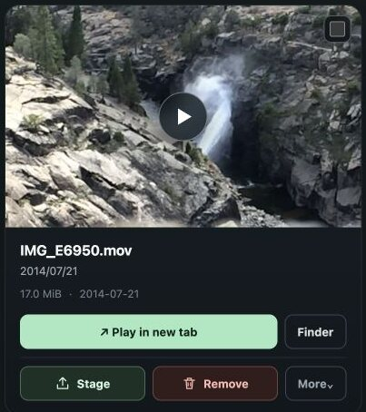

The external-drive consolidator
You have several old disks, a new one, and no faith that a giant drag-and-drop is the right plan.
A local-first media review desk
SlideSorter helps you work through years of pictures and videos in the folders you already have—without uploading them, trusting a black box, or making a mistake permanent.
Free and open source. Your files stay on your own disks.

Every move gets recorded. Undo is always nearby.
01 Pictures + videos
02 No upload
03 No subscription
04 No permanent delete button
A duplicate finder can show you a thousand candidates. It cannot tell you whether a blurry clip contains the only recording of someone’s voice, or whether a photo belongs with a trip you still mean to organize.
Old external drives. Phone imports. Family archives. Half-finished cleanups. The media isn’t junk. It’s undecided.
SlideSorter scans a folder tree on your disk and makes a fast, paginated review gallery. It does not send the catalog anywhere.
Play videos inline, scrub back and forth, and review pictures in the same fast gallery. Search, select a page or range, then choose a destination.
Stage and Remove are only the defaults. Make labels such as “For Mom,” “Print,” “Review later,” or “Fave,” and point each at an ordinary folder you choose.
Choose a destination
SlideSorter is free, open-source software that runs beside your files. You can inspect it, fork it, and host it yourself. There is no hosted media library, account database, or cloud catalog to hand over.
It uses a small local web service because your browser needs a safe, responsive way to see your folders, make thumbnails, move files, and keep Undo history. That service binds to your computer—not a stranger’s cloud.
MIT licensed · inspectable code · no account required
Read and fork the source on GitHub ↗No uploads. No third-party account. No hidden copy.
You have several old disks, a new one, and no faith that a giant drag-and-drop is the right plan.
You want to bring selected material into Photos, but first you need a staging area where choices stay visible.
You are the one person who cannot casually discard the old folders, because you know what may be in them.
Run it where your media lives
Install it once. Point it at a picture-and-video folder. Open the browser window it gives you.
$ brew install marqueymarc/homebrew-tap/slidesorter
$ slidesorter run "/path/to/Media"
Then open http://127.0.0.1:8765/gallery/